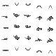
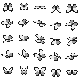

原手绘
实际游戏里的 16px 素材。大块明暗、上提与下落、明显的姿态变化；★ 是游戏正在使用的两行。
1×
2×
4×
读取实际原画…
从原手绘的动作出发，简化翼面与身体，用协调的拍翅、升沉、俯仰和腹部跟随来组织下一版。三列共享画布与播放时间，下面可查看同一时刻的真实三维源。
实际游戏里的 16px 素材。大块明暗、上提与下落、明显的姿态变化；★ 是游戏正在使用的两行。
读取实际原画…
原始管线实验：身体固定、双翅正弦拍动、翼纹细碎。保留它来检查这次是否解决了明确的问题。
读取旧版图集…
为最终像素调整比例与大色块；有意的身体升沉、俯仰、胸腹跟随与拍翅共用一条时间线。
读取新版图集…
十字线是固定画布中心。整体升沉是动画的一部分，所有帧都沿用同一裁格位置，未做自动居中。主画面固定使用最终 16px 图集；1× / 2× / 4× 便于判断实际像素尺度。
采样方式也有一处变化：v1 从128px缩小，v2直接渲染16px再统一索引配色。新版模型沿用v1缩小方式的对照可帮助区分模型改动与采样方式带来的影响。
同一新模型、相机和当前帧。以下均为真实导出诊断，统一蓝色；“隐藏翅膀”只用于观察躯干，不是候选素材。
冻结整体升沉与胸腹
升沉＋俯仰，腹段保持中性
再加胸腹分段跟随
直接看身体的相对变化
实际对照：加整体升沉／俯仰，每帧改变12–56个像素；再加腹部跟随，只在90°的三帧和135°的两帧改变1–2个像素，其他方向被遮挡或量化吞掉。像素差只用于确认动作贡献，不是自然度评分。
默认把三维模型停在当前 Sprite 的精确采样时刻；也可切到连续源动画观察关节跟随。两版 GLB 均来自各自保存的 Blender 工程。
加载旧 GLB…
加载新 GLB…
网页为可自由旋转的透视预览，图集由固定正交相机导出。相位一致不等于两种投影的像素形状完全一致。
每行一个方向，每列 t = 0 / .2 / .4 / .6 / .8 秒。原手绘保留原行顺序；新旧 Blender 的方向由固定相机定义。



游戏使用的源第 1 行，五帧轮廓质心 y 为 7.30 → 6.82 → 7.00 → 8.96 → 10.15；源第 3 行为 9.29 → 8.28 → 7.84 → 9.68 → 10.33。前半上提、后半下移的动势明显。
这些数值包含翅膀，不能当成身体轨迹。16px 中各部位共用色块，也无法恢复唯一关节角。新版胸腹错相的节奏来自用户的艺术目标与关键姿态设计。
连续的双瓣翼与少量大色块比旧版清楚，整体升沉和俯仰让身体参与动作；固定画布保留这些位移。五帧回程可循环，但节奏仍明显离散。
正面第3帧仅3px高，仍偏薄；胸腹跟随在三维中存在，在16px大多不可辨。原画的丰满姿态和手绘夸张仍有优势，不把三维播放顺滑当作像素成品通过。
完整艺术检查与限制旧版工程和上轮生图全部保留。本轮只调整蝴蝶实验原型，尚未替换游戏资产。导出流程可复用；其他昆虫的模型和动作留待各自需求。
真实图片与真实 GLB；没有逐帧重新居中，没有把连续模型的顺滑当成五帧 Sprite 的美术验收。
{kind=link}
{kind=link}
{kind=link}
{kind=link}
{kind=link}